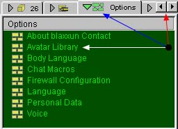

(Skip the talk and just give me the links
to do
Overview | Download Plug-in | Installing | Enter 3D | Change Avatar
The Cybertown 3D VR (3 dimensional virtual reality) environment gives you the capability to move through the 3D city and homes using an avatar (a 3D representation of yourself in a VR environment). If you are a member, you can access chat and message boards and have a virtual blast buying or trading objects and interacting with other avatars. You can also invite your friends to your 3D home to hang out or party! Not a member? Immigrate now!
Download the Plug-in:
To enter the 3D worlds in Cybertown you will need to download the free plug-in called blaxxun Contact from the blaxxun website.
blaxxun Contact runs on Windows 95, Windows 98 and Windows NT and is compatible with current browsers from Netscape and Microsoft. Contact should run in the Windows 95 emulation on the latest Macs (e.g. G3). Currently there are no plans for a UNIX version.
The website address for the plug-in is: http://www.blaxxun.com/services/support/download/install.shtml
Installing the Plug-in:
blaxxun has excellent instructions on their website which will give you the information you need to successfully install the Contact plug-in. Start here: Installation Instructions
Make sure you close your browser before installing the plug-in. If you have any trouble with the blaxxun Contact software or want more information, visit the FAQ on the blaxxun website.
How to enter a 3D World:
Once you have the plug-in installed, enter Cybertown, look to the right to find and click the
If you are a member, have a 3D home and want to go there first, then
- Click the My Home button on the Control panel to the right.
-
Once you get to your home find and click the
 button.
button. -
Once you are comfortable being in a 3D environment you may want to read our instructions on how to Navigate in 3D.
- Not a member yet? What are you waiting for - Immigrate now!
How to change your Avatar:
Tired of that
blue dummy avatar? Want to change your image in a flash? Here's how
to body swap whenever the mood hits you.
You have to be in 3D mode to change your avatar. Find the panel below which is located beside the chat window.

1. Scroll to the "Options" button..
2. Click the
"Options" button
to reveal your lists of options.
3. Click
the "Avatar
Library" and
a alert window will appear asking, "Do you want to load the avatar library?"
Select "Okay".
The list of Avatar Libraries will load in the chat window. If you scroll
down you will find more information regarding avatars. Check out the
different avatars that Cybertown offers citizens and when you find an
avatar you want to use just click the image and voilà —
new you! Trés kewl.
Links to do all the cool stuff in Cybertown:
First: You've gotta be running Windows 95, Windows 98 or Windows NT on a PC or Windows 95 if you've got a Mac G3 (no other Mac flavors available right now).
Second: You need at least 15 MB available on your hard drive.
1. Download the blaxxun Contact software:
2. If you don't already have it, you will be asked if you want the additional
download of the text to voice software. Say yes.
3. Close your browser before installing the plug-in.
4. You're very cool now. Tell your friends.